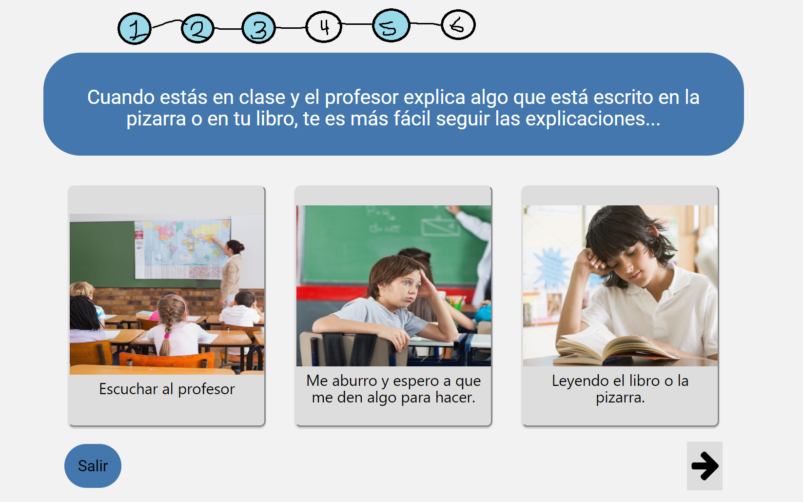

Conclusion
Es perjudicial que etiquetemos a los estudiantes en un único estilo de aprendizaje. La educación que promueva el desarrollo de las habilidades tomando en cuenta la diversidad en el aprendizaje de cada persona, hace este aprendizaje más efectivo y enriquecedor para las personas.
La forma en que elaboremos la información y la aprendamos variará en función del contexto, es decir, de lo que estemos tratando de aprender, de tal forma que nuestra manera de aprender puede variar significativamente de una asignatura a otra.
Saber como aprende mejor tu cerebro te permite desarollarlo significativamente y sin mucho esfuerzo, por ende es imporatente dedicarle tiempo a como aprender mejor y sacarle provecho a tus habilidades mentales para un optimo desarrollo.
